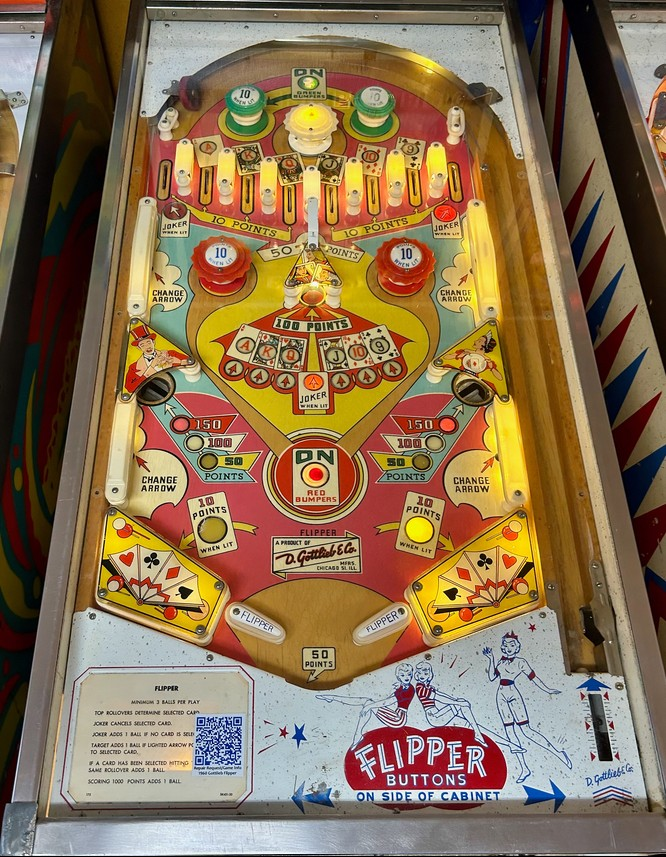

This is a card-themed add-a-ball game not to be confused with Flipper Fair, Flipper Clown, Flipper Cowboy, Flipper Pool, or any of the other countless games with the word "flipper" in their title.
Flipper is historically significant for being the first add-a-ball pinball game.
There are 8 top lanes that the ball can go into. The leftmost and rightmost top lanes light alternately for Joker every time a 1-point switch is hit. The other 6 top lanes correspond to the cards Ace, King, Queen, Jack, 10, and 9. All 8 top lanes score 10 points. If none of the card ranks (Ace through 9) are lit, making a card rank rollover lane will select that card. If a card rank is lit, going through that card's lane again scores 1 extra ball, and going through a lane lit for Joker will cancel whichever card is selected.
The center standup target scores 100 points. Hitting the white wall switches on the sides of the game rotate which card has an arrow pointing to it at the center target. If the arrow is pointing at the Joker, hitting the center target will cancel whichever card in Ace through 9 is currently selected. If the arrow is pointing at the selected card, the center standup target scores 1 extra ball.
Green passive bumpers and red pop bumpers score 1 point or 10 when lit, and are lit for the rest of the current ball by pressing the top On Green Bumpers or lower On Red Bumpers rollover buttons respectively. The white pop bumper always scores 1 point.
Draining the ball or passing through the rollunder gate between the red pop bumpers scores 50 points and changes the value of the gobble holes in the lower left and lower right. The gobble holes end your current ball and score 50, 100, or 150 points.
There are no out lanes or in lanes. Flippers back up directly to the slingshots, which extend all the way to the edges of the table. Slingshots score 1 point or 10 when lit, and alternate being lit or not each time a 1-point switch is hit anywhere in the game. The flipper gap is somewhat wider than would be seen on most games and there is no center post.
The below picture of Flipper's playfield was taken from Pinside, where it is listed as image #3887799.
